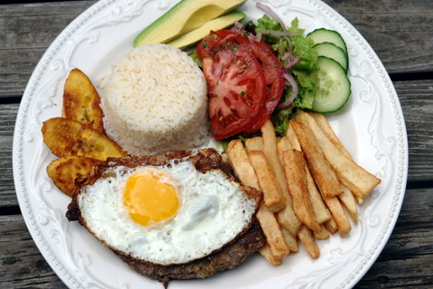

Parque nacional Madidi
El Parque Nacional y Área Natural de Manejo Integrado Madidi se encuentra entre las provincias Abel
Iturralde y Franz Tamayo, al noroeste del Departamento de La Paz
Tiahuanaco (tiwanaku)
Tiahuanaco o Tiwanaku es una antigua ciudad arqueológica, capital del Estado tiahuanacota, ubicada 15
kilómetros al sudeste del lago Titicaca en el departamento de La Paz al oeste de Bolivia.
Lago Titikaka
El lago Titicaca se extiende por la frontera entre Perú y Bolivia en la cordillera de los Andes y es uno
de los lagos más grandes de Sudamérica y el cuerpo de agua navegable más alto del mundo. Se dice que es
la cuna de los incas y cuenta con varias ruinas.
Copacabana
Copacabana es una ciudad boliviana en el lago Titicaca, conocida por los festivales religiosos y las
casas con tejados rojos. Es una base para explorar la Isla del Sol y la Isla de la Luna, que tienen
sitios arqueológicos incas sagrados.
Isla del Sol
La Isla del Sol es una isla boliviana en el lago Titicaca. Decenas de caminos la atraviesan y es famosa
por sus sitios de origen Inca, como Pilko Kaina, con su palacio en ruinas
Isla de la Luna
La Isla de la Luna, también llamada Isla Koati, es una isla de Bolivia que se encuentra en el lago
Titicaca, junto a la isla del Sol en el departamento de La Paz. Es una isla pequeña y cuenta con una
superficie de 105 hectáreas?
Chairo
Plato de sopa que forma parte de la tradición paceña. Está elaborado con chuño machacado (papa
deshidratada), papa picada, maíz blanco, trigo, carne de res y de cordero y chalona. Es acompañado por
trozos de carne de cerdo frito.

Plato Paceño
Es el plato que representa a la ciudad. Nació en 1781, en el denominado “Cerco a La Paz”, en el que miles
de indígenas se rebelaron contra el yugo español, por lo que, durante 180 días, los habitantes tuvieron
que consumir sólo habas, choclo, papa y queso de oveja, elementos que componen este tradicional plato.
Queso Humacha
Este plato tiene como ingredientes al queso, al ají amarillo, al choclo y a la papa pureja. Se sirven dos
o tres papas en un plato plano y se lo decora servido con abundante queso derretido.
Jakhonta
Se trata de un preparado con trozos de carne, chuño, papa, hojas de repollo y cebolla; y condimentado con
orégano.
Thimpu
El Thimpu es un preparado de carne de cordero, papa, arroz, salsa a base de ají colorado, cebolla,
arvejas y habas.

Cholita Paceña
Plato elaborado con carne de res (churrasco), arroz, queso, leche, mantequilla, pimienta, papas fritas,
sal y ensalada de verduras